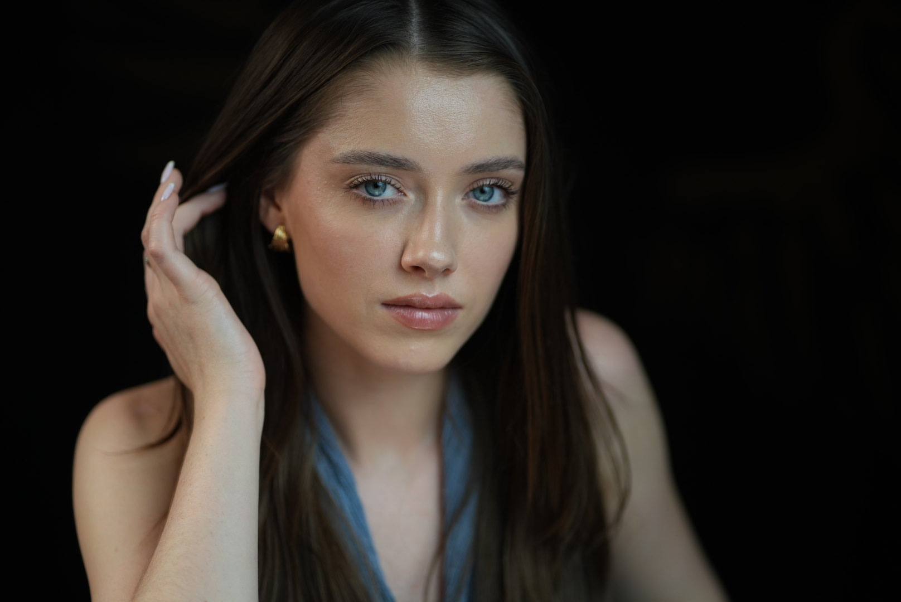
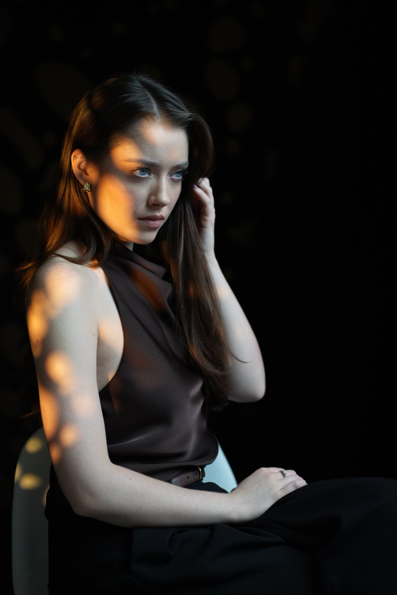
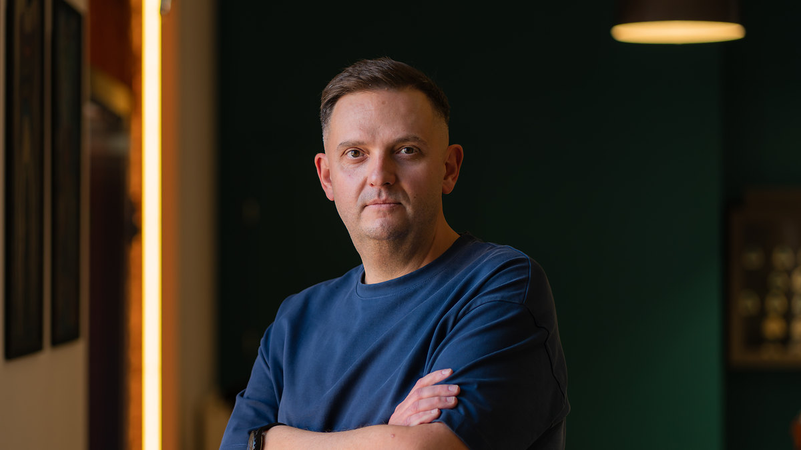

Sesja wizerunkowa
Ludzie nie pamiętają przysłony. Pamiętają, co poczuli.

I · Cel
Gdzie to zdjęcie będzie żyło?
profilstrona zespołuofertawywiadscena
II · Emocja
Zdjęcie, które chce powiedzieć wszystko, nie mówi nic.
Wybieramy jedną.

III · Światło

Światło zastane
Światło ustawione
Nie mam ulubionego światła. Mam pytanie: po co?
Gdy zdjęcie ma zachować nastrój miejsca.

Gdy nastrój trzeba zbudować od zera.
IV · Kadr

kadr szeroki 
kadr bliski
Szeroki mówi: mój świat. Bliski: ja.
V · Charakter
otwartość konkret 
pewność
Jedno światło. Różni ludzie.

Napisy końcowe
ZdjęciaMariusz Świerguła
Doświadczenie20 lat pracy z ludźmi · ponad 300 portretów
Przed obiektywem stawali między innymiAdam Michnik · Jerzy Pilch · Janina Paradowska · Kuba Wojewódzki · Katarzyna Kolenda‑Zaleska
W roli głównejTy